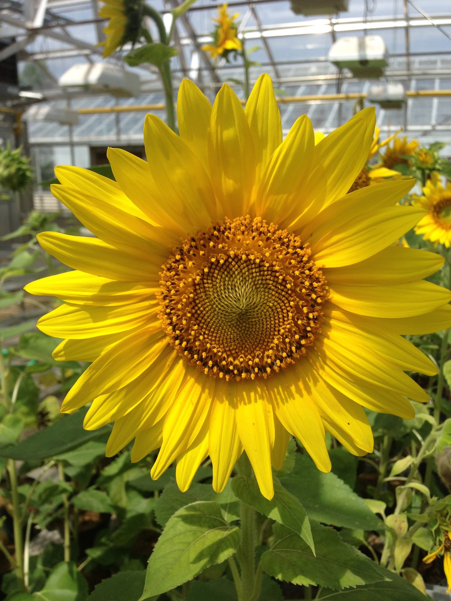
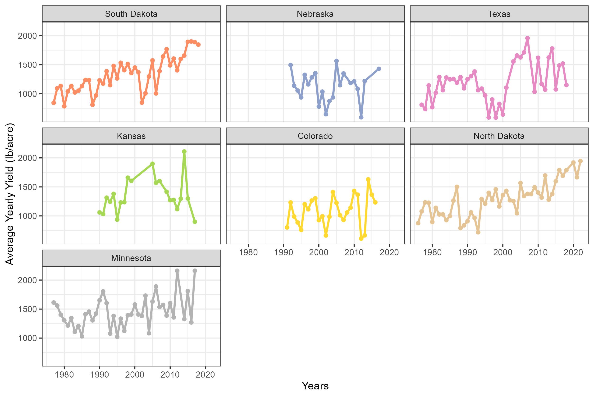
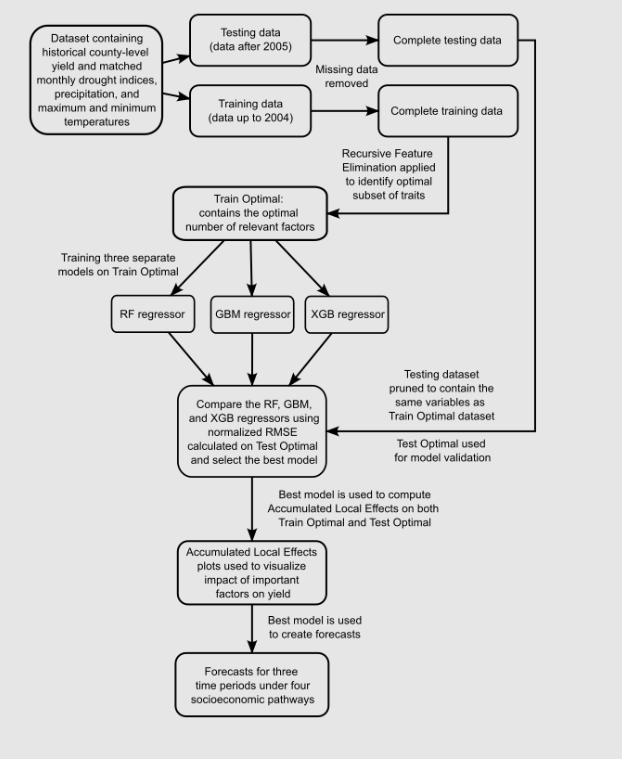
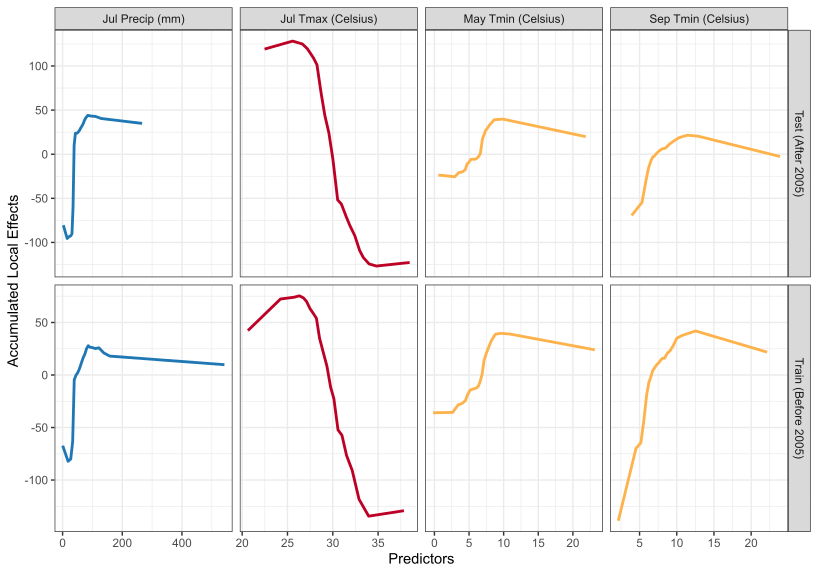
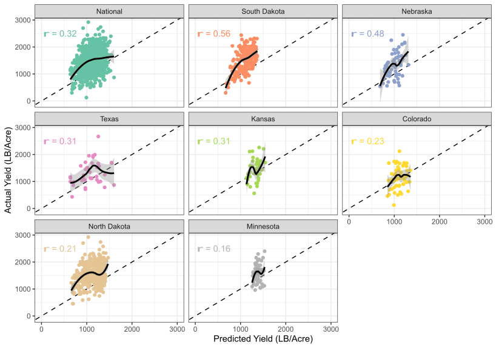
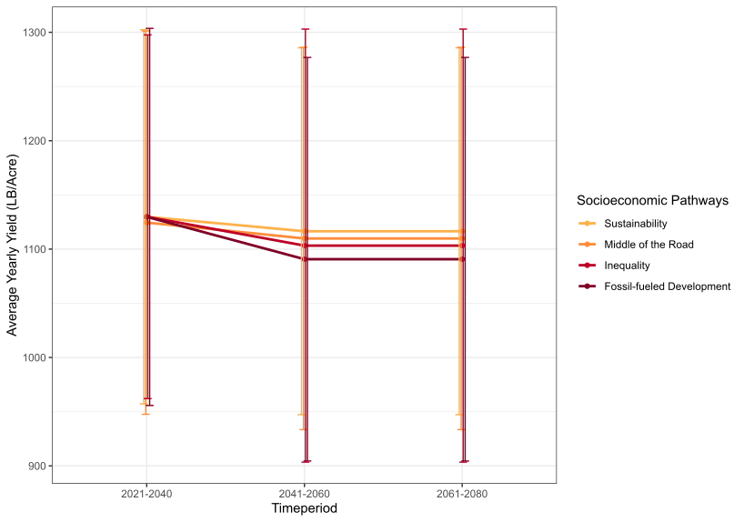
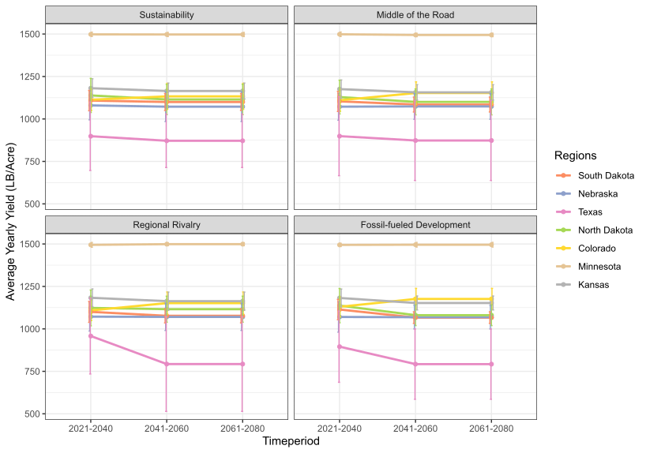

1. Introduction
- Background:
Sunflower serves as a significant oilseed crop in the US, the yield of which is perceptibly affected by climate dynamics. The escalating adversities in global food production, exacerbated by climate change, underline the importance of precise crop yield forecasting. This project harnesses Explainable AI (XAI) and Machine Learning (ML) to discern the climate variables influencing sunflower yield at both national and regional scales, and to project future yields under varied emissions scenarios. This endeavor aims to facilitate better planning and management strategies by offering insights into key climate variables and their thresholds, thereby contributing to adaptive measures.

Image by Dr. Chase Mason
2. Problem Statement
- This study is committed to identifying the climate variables significantly impacting sunflower yield, and forecasting future yield per acre in the US under distinct emissions scenarios.
3. Data
- Study Area and Data Sources:
- The analysis encompasses data from 1976 to 2022, covering 192 counties across 7 states. The yield and weather data are programmatically acquired from USDA and NOAA databases using API keys, while future projections are sourced from the WorldClim repository utilizing CMIP6 models for the period 2021-2080.
- Data Preparation:
- Utilizing R programming language, the data was compiled, cleaned, and processed. Extraction of data were performed at county centroids, with missing data elimination resulting in 177 counties. A split at 2004 was employed to create training and testing datasets, with state-level datasets generated for each state.
4. Exploratory Data Analysis (EDA)
Average yearly yield of oilseed sunflower from each of the 7 US states used in this study

5. Methodology
Workflow:
- The workflow, as depicted here, delineates the process of training and validating ML models on both national and state-level datasets. Recursive Feature Elimination (RFE) was employed to cherry-pick optimal predictors, with training datasets utilized to train RF, GBM, and XGB regression models. The predictive performance was evaluated employing normalized RMSE on testing datasets.

Software and Programming Languages Used:
- The R programming environment was instrumental for data cleaning, visualizations, and modeling.
6. Main Results
Important Predictors:
- Recursive feature elimination with a random forest algorithm to identify the most important predictors for yield at the national level. The predictors were ranked based on their relative importance in predicting yield using the mean decrease of root mean square error metric.

Threshold Analysis:
- The impact of four important predictors (total precipitation in July, maximum July temperature, minimum May temperature, and minimum September temperature) on yield. Accumulated Local Effects (ALE) were calculated for these predictors using both training and test datasets. The ALE plots illustrate how changes in predictor values affect yield (measured in lbs/acre).

Model Performance:
The predictive performance of the best models at the national and state levels was evaluated using Pearson’s correlation (r) between predicted and actual values on the testing dataset. The trend of the relationship between predicted and actual values was visualized using a locally estimated scatterplot smoothing line with a 95% confidence interval. The analysis showed that the national model, based on the Random Forest regressor, performed better than state-level models in North Dakota and South Dakota, but state-level models outperformed the national model in the other states. The best state-level models for Colorado, Kansas, and Minnesota also used the Random Forest regressor, while the Gradient Boosting Machine regressor was used for Nebraska and Texas.

Future Yield Forecasts at the National Level:
Average yield forecasts at the national level were analyzed for three time periods and under different Socio-Economic Pathways (SSP). The average annual yield for 2022 was approximately 1940 lbs/acre, with error bars representing the standard deviation around this mean. Future yield forecasts were depicted as point estimates with error bars indicating variation (standard error), and lines illustrated yield changes across four time periods and under three SSPs. The SSPs included SSP 126 (“sustainable future”), SSP 245 (“middle of the road”), SSP 375 (“regional rivalry”), and SSP 585 (fossil-fueled development). Each SSP was characterized by specific factors such as global temperature rise, carbon dioxide emissions, economic growth, inequality, and environmental concerns.

Future Yield Forecasts at the State Level:
Average yield forecasts for each of the seven states were examined for three time periods and under different Socio-Economic Pathways (SSP). The latest average annual yield was represented by point estimates, with error bars indicating the standard deviation around the mean. Future yield forecasts were also depicted as point estimates with error bars reflecting the variation (standard error) around these predictions. The lines portrayed yield changes across the time periods and under four SSPs: SSP 126 (“sustainable future”), SSP 245 (“middle of the road”), SSP 375 (“regional rivalry”), and SSP 585 (fossil-fueled development). Each SSP was characterized by specific factors such as global temperature rise, carbon dioxide emissions, economic growth, inequality, and environmental concerns.
